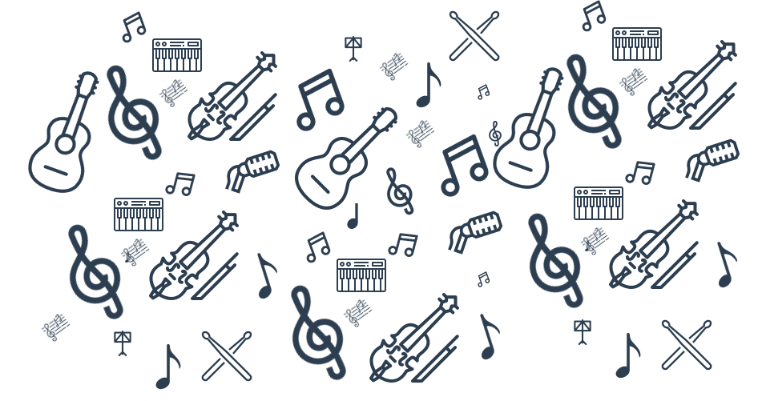

Transforme sua Vida Através da Música!
Descubra como a música pode mudar vidas! Oferecemos aulas gratuitas de violão, canto, bateria, teclado e violino para todas as idades. Junte-se a nós e libere seu talento!
Cadastrar
Descubra como a música pode mudar vidas! Oferecemos aulas gratuitas de violão, canto, bateria, teclado e violino para todas as idades. Junte-se a nós e libere seu talento!
CadastrarFundada em 2015, nossa ONG surgiu do desejo de levar a música para comunidades que muitas vezes não têm acesso a uma educação musical de qualidade. Desde então, já impactamos mais de 200 alunos, ajudando a realizar sonhos e construir carreiras musicais.
Nossa missão é democratizar o acesso à educação musical, promovendo o desenvolvimento cultural, social e emocional dos nossos alunos.
Ser uma referência em ensino musical gratuito e inclusivo, criando oportunidades para talentos emergirem.
Inclusão, Respeito, Criatividade, Dedicação, Transformação.
Nossa equipe é composta por músicos, educadores e voluntários apaixonados pelo ensino e pela música. Juntos, trabalhamos para criar um ambiente acolhedor e inspirador para nossos alunos
Estamos localizados no coração de Sobral, ao lado da Praça São João, de fácil acesso tanto para moradores locais quanto para visitantes. Próximo a pontos de ônibus e estacionamentos, facilitando a chegada de alunos e voluntários.
Rua das Artes, 123 – Centro, Sobral, CE, 62010-000
Segunda a Sexta-feira: 8h às 21h Sábado: 9h às 14h
(88) 9 9999-9999
A música conecta o que palavras não conseguem.